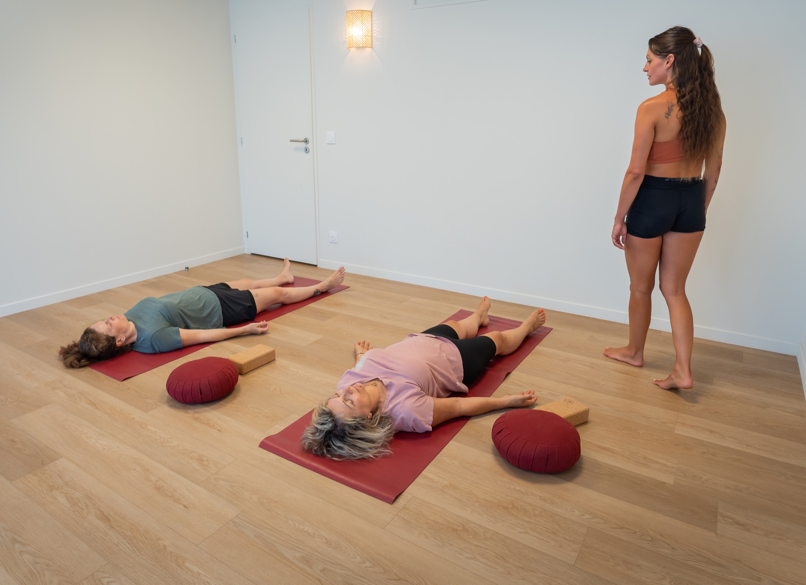
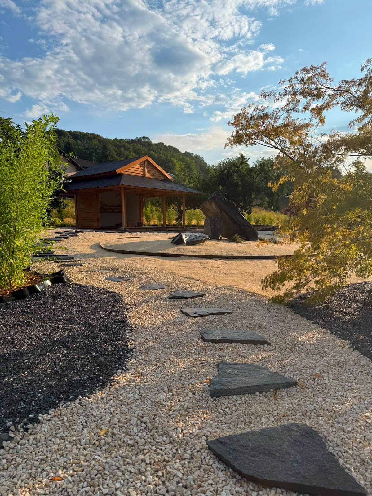

Prochains rendez-vous · autour d'Annecy
Des temps forts pour se retrouver, pratiquer et prendre soin de soi. Les places sont limitées — réserve vite la tienne.
Les prochains rendez-vous
Au-delà des cours réguliers, je te propose des ateliers pour prendre soin de toi autrement : un temps tout en douceur autour de la reconnexion au corps, avec l'association Ostara, et un yoga suivi d'un petit-déjeuner dans un jardin japonais. Chacun à sa façon, une belle occasion de se déposer.

Un atelier de yoga tout en douceur autour de la reconnexion au corps, réservé aux femmes victimes de violences (quelle qu'en soit la forme), en partenariat avec l'association Ostara. Un espace bienveillant et sécurisant.
En savoir plus
Un yoga suivi d'un petit-déjeuner au cœur des jardins japonais Kazoku, à Thusy — un réveil du corps, du cœur et des sens.
En savoir plusÉcris-moi, je serai ravie d'y répondre et de réserver ta place.